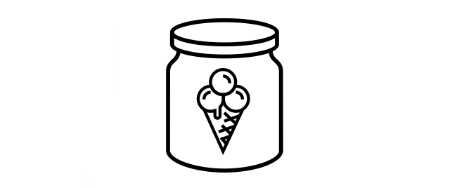

Scikit-Learn allows you to save models by pickling them. This is a universal method for Python objects but it's also unsafe! You really need to be sure that there's no "man in the middle" when you load a saved model, which is a reason for concern.
We made a small course on the topic that explains
how you might use the onnx framework for saving and deploying models.
The scikit-onnx framework offers
support for many scikit-learn tools but we noticed that there was
one downside. The moment that you save your model in the ONNX format
it's no longer usable from scikit-learn. Usually, this isn't an issue
because the model is already trained. But there is a breed of models
for which this does become an issue: models with partial_fit.
These models can learn on batches of data, which means that you'd be able to pre-train a model to finetune it later! You may want to check course on these models
Enter icepickle

This is why we wrote icepickle.
Icepickle allows you to safely store and load linear scikit-learn models.
This includes the partial_fit-models like SGDClassifier and SGDRegressor as well as the standard LinearRegression and LogisticRegression models.
Suppose you have a trained linear model, like below:
from sklearn.linear_model import LogisticRegression
from sklearn.datasets import load_wine
X, y = load_wine(return_X_y=True)
clf = LogisticRegression()
clf.fit(X, y)
Then icepickle offers methods to load and save the model state.
from icepickle.linear_model import save_coefficients, load_coefficients
# You can save the classifier.
save_coefficients(clf, 'classifier.h5')
# You can create a new model, with new hyperparams.
clf_reloaded = LogisticRegression()
# Load the previously trained weights in.
load_coefficients(clf_reloaded, 'classifier.h5')
The coefficients are stored in .h5 files, which are mere data containers.
That means that we won't need to worry about arbitrary Python code
running when we load it in.
Stateless Models
Although this library supports only linear models, it does allow us to do something that you cannot easily do via onnx: you can build pre-trained text classification models that others may finetune!
Assuming that you use a stateless featurizer in your pipeline,
such as HashingVectorizer or language models from whatlies, you can choose to pre-train your scikit-learn model beforehand and fine-tune it later using models that offer the .partial_fit()-api.
This library also comes with utilities that makes it easier to finetune systems via the .partial_fit() API. In particular we offer partial pipeline components via the icepickle.pipeline submodule.
import pandas as pd
from sklearn.linear_model import SGDClassifier
from sklearn.feature_extraction.text import HashingVectorizer
from icepickle.linear_model import save_coefficients, load_coefficients
from icepickle.pipeline import make_partial_pipeline
url = "https://raw.githubusercontent.com/koaning/icepickle/main/datasets/imdb_subset.csv"
df = pd.read_csv(url)
X, y = list(df['text']), df['label']
# Construct a pipeline that can handle `.partial_fit`
pretrained = SGDClassifier(loss="log")
pipe = make_partial_pipeline(HashingVectorizer(), pretrained)
# Train a pre-trained model.
pipe.fit(X, y)
# Save the coefficients, safely.
save_coefficients(pretrained, 'pretrained.h5')
# Create a new model using pre-trained weights.
finetuned = SGDClassifier(loss="log")
load_coefficients(finetuned, 'pretrained.h5')
new_pipe = make_partial_pipeline(HashingVectorizer(), finetuned)
# This new model can be used for fine-tuning.
for i in range(10):
# Inside this for-loop you could consider doing data-augmentation.
new_pipe.partial_fit(X, y)
Experiment!
This library allows for an experimental finetuning mechanic using simple lightweight models in scikit-learn. We think this is an interesting approach to consider because it allows you to keep things much more lightweight than many of the text classification models hosted on huggingface.
We do want to stress though that it's meant as a lightweight tool. It's very unlikely to give you state of the art results, but it might be enough to keep your stack in the realm of scikit-learn.
Back to labs main.